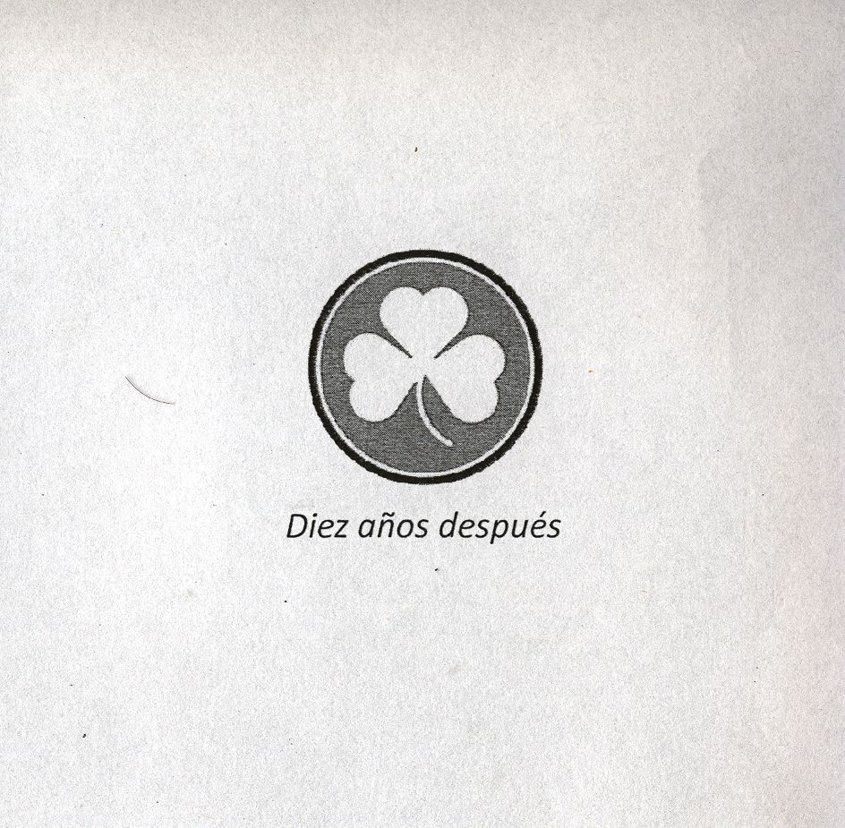
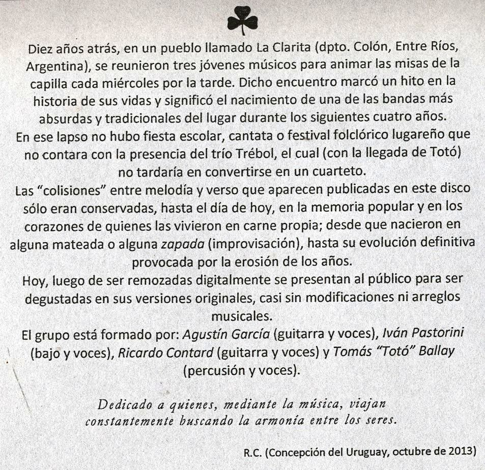

Sorry, your browser doesn't support html5!
Preludio
Un bichito
Canción con vos
Gente bonita
Ven a cantar
Consagración de un alma joven
Y no volver atrás
Arde el fuego
Los visitantes
Un mundo mejor
Interludio
Candombe de mucho palo
Amuchunguanguanrrero
Como pájaros en el aire
De colores
La isla
La voz del camino
En el fondo del mar
Al compás de la ojota
Posludio
